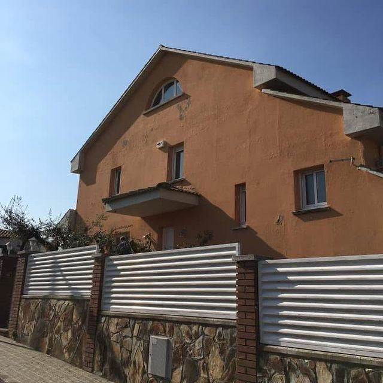
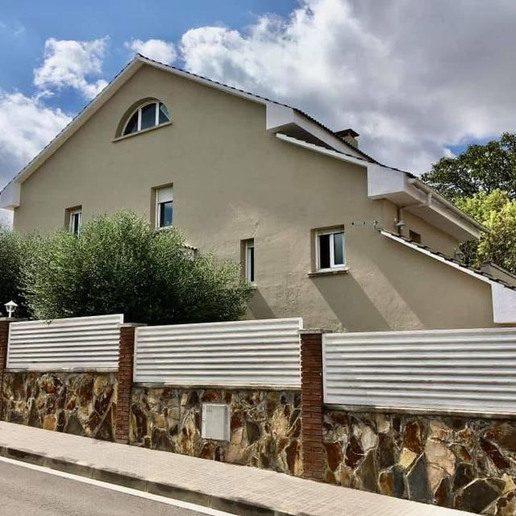

Comunidades y fachadas: una obra que se explica en la junta
Pintamos fachadas de edificios, escaleras y zonas comunes, y dejamos a punto pisos vacíos en Terrassa, Sabadell y el Vallès. Antes de pintar miramos el soporte; después, presupuesto por partidas y calendario pactado con el administrador.

Del portal a la azotea
Lo que nos piden comunidades, administradores y propietarios.
Pintura de fachadas de edificios
Diagnóstico, reparación del soporte y pintura según el material: silicato, acrílica o revestimiento elástico.
Escaleras y zonas comunes
Vestíbulos, escaleras, rellanos, patios de luces y garajes, pintados con la finca en uso.
Pisos vacíos
Pintura completa y reparaciones de acabado entre un inquilino y el siguiente, o antes de vender.
Terrazas y azoteas de la comunidad
Impermeabilización con poliuretano líquido cuando el agua llega al último piso.
Para administradores de fincas
Cómo trabajamos con quien gestiona varias fincas: visitas, presupuestos comparables y avisos a los vecinos.


La misma esquina, antes y después
Un edificio de viviendas en esquina con la fachada envejecida: manchas, pintura desigual y la piedra de los recercados ennegrecida. Después, la fachada pintada en crema y la piedra limpia.

Lo que necesita la comunidad
Diagnóstico por escrito
Qué tiene la fachada, la escalera o la azotea, de dónde viene y qué pasa si se deja. Con fotos, para enseñarlo en la junta.
Presupuesto por partidas
Medios auxiliares, reparación del soporte y acabado por separado, para comparar con otras ofertas sin mezclar conceptos.
Vecinos informados
Fechas de andamio, zonas protegidas y balcones a los que hay que acceder, acordados con el administrador antes de empezar.
Un solo interlocutor
Somos una división de Lamper Instalaciones y Mantenimiento: si hay que tocar bajantes, cableado de fachada u otros oficios, se coordina desde la misma empresa.


También tu casa
Una casa unifamiliar con la fachada en terracota y, después, pintada en crema. El mismo criterio que en un edificio: revisar el soporte, reparar lo que haga falta y elegir la pintura según el material.
Con qué trabajamos
Marcas con ficha técnica clara, para que la junta sepa qué se aplica en su edificio.
- Fachadas minerales
- Silicatos Keim, transpirables
- Paredes y techos
- Pinturas plásticas Jotun
- Terrazas y azoteas
- Impermeabilización Mamper, poliuretano líquido 100 %
- Ámbito
- Terrassa, Sabadell, el Vallès, Barcelona y el resto de Cataluña
Lo que nos preguntan comunidades y propietarios
¿Qué necesitáis para darnos un presupuesto?
Fotos de la fachada o de la zona (de lejos y de cerca), la población, el número de plantas y quién administra la finca. Con eso preparamos la visita.
¿Podéis presentar la propuesta en la junta?
Te preparamos el diagnóstico y un presupuesto por partidas pensado para la junta, para que el administrador lo pueda explicar y comparar.
¿Pintáis también la escalera mientras los vecinos la usan?
Sí. Se trabaja por tramos, se protege lo que no se pinta y se señaliza lo recién pintado. Más en escaleras y zonas comunes.
¿Hasta dónde os desplazáis?
Estamos en Terrassa (calle de Núria) y trabajamos en Sabadell, el Vallès, Barcelona y el resto de Cataluña.
¿Cómo está la fachada?
Mándanos fotos, la población y el número de plantas. Si eres administrador, dinos también cuándo es la próxima junta.